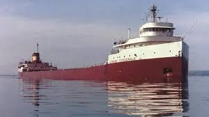

S.S. Edmund Fitzgerald

| Built | 1958 |
|---|---|
| Builder | Great Lakes Engineering Works, River Rouge, MI |
| Owner | Northwestn Mutual Life Insurance |
| Operator | Oglebay Norton Company |
| Length | 729 ft (222 m) |
| Gross Tonnage | 13,632 GT |
| Cargo Type | Taconite iron ore pellets |
| Captain | Ernest McSorley) |
| Lost | November 10th, 1975 |
| Location of Wreck | Lake Superior, ~17 mi from Whitefish Point, MI |
| Depth of Wreck | ~531 ft (161 m) |
| Crew | 29 (all lost) |
History and Service
The SS Edmund Fitzgerald was an American Great Lakes bulk freighter that, on the evening of November 10, 1975, vanished suddenly into the depths of Lake Superior during a violent storm, taking all 29 members of her crew with her. She sent no distress call. She left no survivors. The cause of her loss has never been definitively established. In the annals of Great Lakes maritime history, no sinking has claimed more cultural resonance, a quality she shares with the great ocean liners of the early twentieth century, including the RMS Titanic. The Edmund Fitzgerald was built at the Great Lakes Engineering Works in River Rouge, Michigan, and launched on June 7, 1958. She was named after the chairman of the Northwestern Mutual Life Insurance Company, which owned the vessel. At 729 feet in length, she was the largest ship on the Great Lakes at the time of her commissioning, a distinction she held for seventeen years. Over the course of her service life, she hauled taconite iron ore pellets from ports near the iron ranges of Minnesota and Michigan to steel mills in Detroit, Toledo, and other industrial centers on the lower lakes. She was considered a reliable and well-maintained vessel, crewed by experienced Great Lakes mariners under Captain Ernest McSorley, a veteran of thirty-seven years on the lakes who had commanded the Fitzgerald since 1972.
The Final Voyage
On November 9, 1975, the Fitzgerald departed the Burlington Northern Railroad Dock in Superior, Wisconsin, carrying a full load of 26,116 tons of taconite pellets bound for the Zug Island steel mill near Detroit. The weather forecast at departure was not alarming, but conditions on Lake Superior — the largest, deepest, and most dangerous of the Great Lakes — can change with extraordinary speed in November, when Arctic air masses begin to collide with the remnants of autumn warmth. The Fitzgerald joined company with another freighter, the Arthur M. Anderson, which was following a similar course. The two vessels maintained radio contact throughout the day on November 10 as conditions deteriorated rapidly. Both ships altered course northward to seek shelter closer to the Canadian shoreline as the storm intensified
The Storm
The storm that engulfed the two ships on November 10 was one of the most severe November storms ever recorded on Lake Superior. It produced sustained winds of 52 miles per hour with gusts exceeding 70 mph. Witnesses aboard the Anderson estimated wave heights at 25 to 35 feet. The National Weather Service later determined that the storm was comparable in intensity to a Category 1 hurricane. At approximately 3:30 PM, Captain McSorley reported to the Anderson that the Fitzgerald had developed a list to one side, had lost two deck vents, and had one of her radars out of service. These were troubling signs, but not yet cause for alarm. McSorley remained calm in his communications and gave no indication he believed the ship was in immediate danger. The two ships were approximately 10 miles apart at this point, with the Fitzgerald slightly ahead and running into worsening conditions.
Disappearance
At approximately 7:10 PM, the first mate of the Anderson spoke with Captain McSorley by radio. It was a routine check on the Fitzgerald's condition. McSorley's last reported words were: "We are holding our own." Minutes later, the Fitzgerald disappeared from the Anderson's radar screen. She had been there, and then she was not — there was no gradual fading, no distress call, no final transmission.
"We are holding our own." — Captain Ernest McSorley, last known transmission, approximately 7:10 PM, November 10, 1975
The Anderson searched the area and contacted the Coast Guard. Debris — including lifeboats, life preservers, and various cargo — was found on the surface of the lake. No bodies were ever recovered from the wreck site. The Fitzgerald had sunk in water approximately 530 feet deep, roughly 17 miles northwest of Whitefish Point, Michigan.
Investigation
Two major investigations were conducted into the sinking: one by the U.S. Coast Guard and one by the National Transportation Safety Board. The two investigations reached different conclusions. The Coast Guard concluded that the most likely cause was flooding through improperly secured hatch covers, which allowed water to accumulate in the cargo hold over the course of the storm. The NTSB concluded that the ship had suffered a shoaling event — striking or nearly striking the bottom in shallow water — that caused structural damage leading to catastrophic flooding. Neither conclusion has been proven definitively. Subsequent dives to the wreck have added information but not resolution. The Fitzgerald broke into two major sections in the sinking, with the bow section relatively intact and the stern section inverted and heavily damaged. The precise sequence of events in the final minutes remains unknown.
Legacy
The loss of the Fitzgerald struck a deep chord in the communities of the Great Lakes region and beyond. Within a year of the disaster, Canadian singer-songwriter Gordon Lightfoot had written and recorded "The Wreck of the Edmund Fitzgerald" — a seven-minute ballad that captured the mood of the storm and the fate of the crew with a directness that made it one of the most powerful memorial songs in American folk music. The song reached number two on the Billboard Hot 100 and introduced the story of the Fitzgerald to a national audience that might otherwise never have heard of a commercial freighter on Lake Superior. The wreck itself was surveyed in detail by a series of expeditions. In 1995, the ship's bell was recovered and replaced with a replica engraved with the names of all 29 crew members. The original bell is displayed at the Great Lakes Shipwreck Museum at Whitefish Point, Michigan, where a memorial service is held each November 10. The bell is rung 29 times — once for each member of the crew.